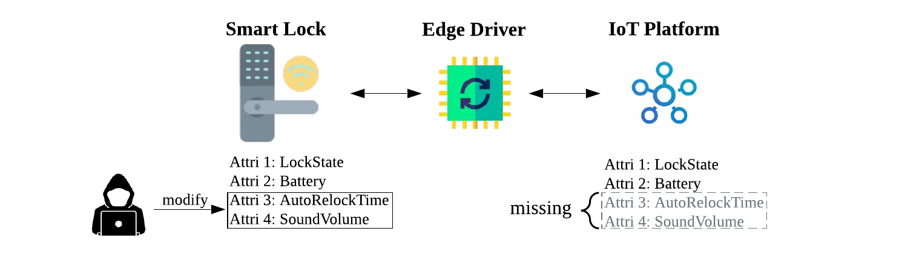

Validate
Check profiles and capability maps against versioned JSON Schemas.
edgeloom validate .
↗
EdgeLoom validates, patches, restores, translates, and discovers smart-home edge-driver artifacts.
checked · reversibleBuilt in public for developers, maintainers, smart-home users, manufacturers, integrators, researchers, and standards communities.
The boundary problem
Platform drivers translate protocol behavior into usable capabilities. When their artifacts are incomplete or opaque, attributes disappear at the boundary. EdgeLoom makes that layer inspectable and changeable.
Current scope: SmartThings Edge artifacts and a Home Assistant-to-SmartThings translation path — not firmware modification, hub installation, or a replacement for either platform.
Core capabilities
EdgeLoom leaves packaging, review, and hub installation with the operator.
Check profiles and capability maps against versioned JSON Schemas.
edgeloom validate .
↗
Expose mapped attributes with backups, rollback on failure, and a path to stock.
edgeloom restore DRIVER
↗
Generate SmartThings Edge proxy artifacts from supported Home Assistant entities.
edgeloom translate …
↗
Catalog driver fingerprints, devices, and gaps in capability mapping.
edgeloom discover …
↗
Project health
Verified
Activity is not adoption: no production scale, partnership, endorsement, or user-count claims are made.
Industry + standards potential
Manufacturers, maintainers, and integrators can inspect how behavior becomes a capability and review generated changes.
Researchers can investigate hidden attributes, trust boundaries, generated code, and driver supply chains.
Standards communities can use schemas and capability maps to discuss namespaces, portability, and future contracts.
These are directions for collaboration, not claims of adoption or endorsement.
Getting started
EdgeLoom requires Python 3.11 or newer.
# install the latest release
$ pip install edgeloom
# check an artifact tree
$ edgeloom validate .Community
Code, docs, device results, issue triage, design discussion, and review all count as contributions.
Research → infrastructure
EdgeLoom grows the hidden-attribute research into shared contracts, reproducible transforms, real-device evidence, and open stewardship.

The study found 119 hidden attributes across 31 devices from 16 manufacturers. It motivates EdgeLoom; it does not define current tool coverage.
Read the paper → Xu et al. · reproduced under CC BY 4.0ResearchMeasure driver/profile mismatches.
ImpactMake hidden behavior reviewable.
SustainabilityVersion, release, govern, repeat.
Xuening Xu · Chenglong Fu · Xiaojiang Du · Bo Luo
Releases + news